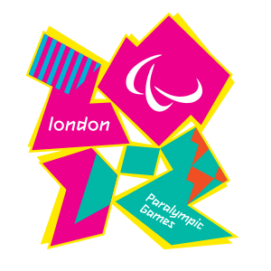
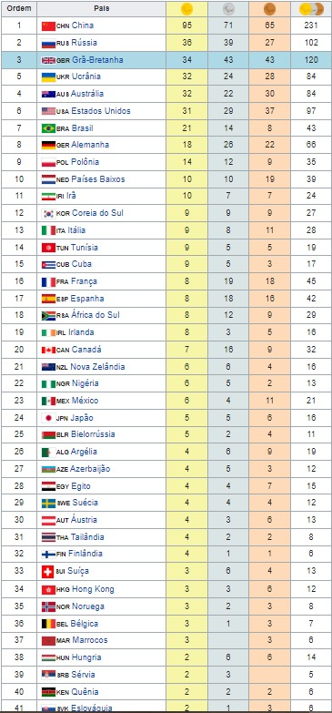

 
|
Os Jogos Paralímpicos de Verão de 2012 foram os décimo quartos Jogos Paralímpicos da história, realizaram-se entre 29 de agosto e 09 de setembro de 2012, em Londres, no Reino Unido depois da escolha da cidade para sediar os Jogos Paralímpicos e Olímpicos de Verão de 2012. Foi a segunda edição dos Jogos no Reino Unido; o país já sediara em 1984 os Jogos Paraolímpicos. Ainda assim, o país sediou o ancestral das Paralimpíadas, os Jogos de Stoke Mandeville. Estes foram realizados pela primeira vez em 1948, organizados pelo Dr. Ludwig Guttman e pelo Hospital de Stoke Mandeville, no mesmo dia da cerimônia de abertura das Olimpíadas de Verão de 1948, que foi o primeiro evento de atletismo exclusivamente organizado para atletas deficientes. No relatório de avaliação, o Comitê Olímpico Internacional (COI) afirmou que "como berço do esporte paralímpico, a capacidade do mesmo na Grã-Bretanha está entre os melhores no mundo." |
Modalidades→Atletismo→Bocha →Ciclismo →Estrada →Pista →Basquetebol em cadeira de rodas →Hipismo →Esgrima em cadeira de rodas →Futebol de cinco →Futebol de sete →Goalball →Judô →Levantamento de peso →Natação →Remo →Rugby em cadeira de rodas →Tênis em cadeira de rodas →Tênis de mesa →Tiro com arco →Tiro →Vela →Voleibol Medalhas |